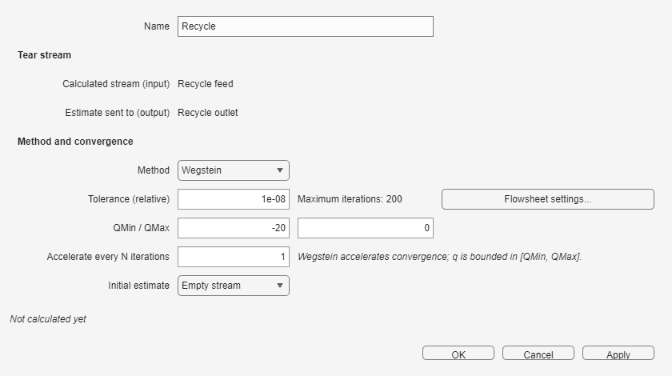
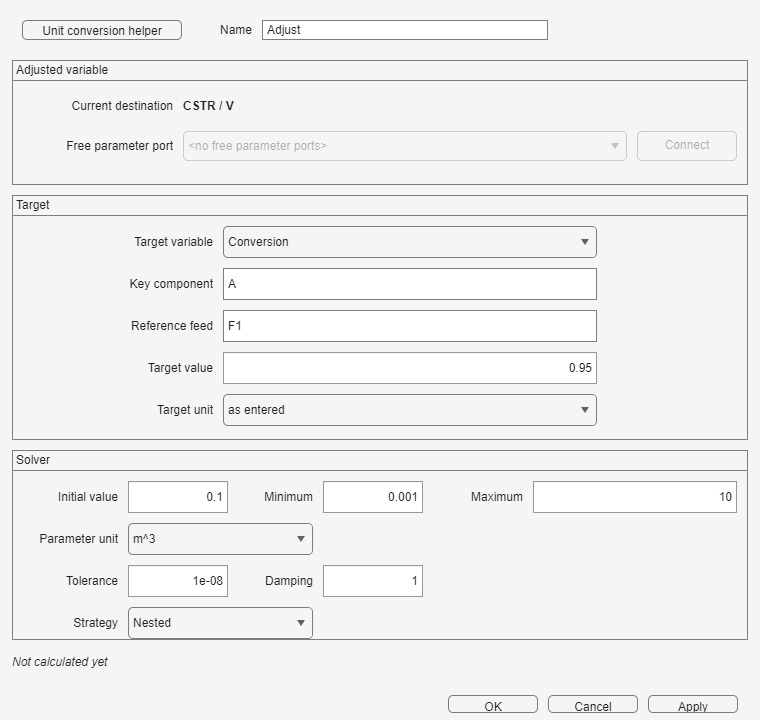

Recycle compares a tear-stream estimate with its calculated return; Adjust varies one connected parameter to meet a measured target.
Make the open flowsheet solve without the loop where possible. Identify the calculated tear Stream, its estimate, the measured target, and the scalar parameter that may be varied.
Connect the calculated tear Stream to Calculated and the return Stream to Estimate. Choose Direct or Wegstein, enter the relative tolerance, and choose an initial estimate. Wegstein also uses QMin, QMax, and Accelerate every N iterations.
| Variables | Checks used |
|---|---|
| Method, tolerance, initial estimate, and Wegstein limits and interval when selected | Tolerance must be positive, limits must be ordered, and the initial estimate must lie inside them. |

A material recycle creates an algebraic loop. Insert one Recycle block at the tear Stream. Direct substitutes the calculated Stream on every iteration; Wegstein accelerates the update within its displayed bounds. Convergence requires the relative Stream error to remain below Tolerance.
An outlet-flow specification inside a recycle is applied when the loop converges for the first time; until then, the previous split is used to obtain a stable first solution. If the loop conserves total moles, specifying an absolute purge flow does not uniquely determine the purge fraction. Specify the outlet fractions in that case.
Example: example 48, PFR with recycle (R = 1, Levenspiel), demonstrates a material recycle.
Connect the measured Stream to the Adjust input and its Parameter (SI) output to a supported scalar port, such as reactor volume, feed temperature or flow, or Jacket area. Choose the target variable and value, parameter bounds, damping, tolerance, and strategy. Connect identifies an available downstream parameter port.
| Variables | Checks used |
|---|---|
| Measured target, target value, varied parameter, bounds, initial value, damping, tolerance, and strategy | Tolerance is positive, bounds are ordered, and the initial value lies within them. The connected parameter is varied during Run. |

Example: example 6, Adjusted CSTR volume, varies reactor volume to meet a target.
When Adjust and Recycle share a model, Simultaneous updates both during the same iteration. Nested waits for every Recycle to converge before the next Adjust step. The solved example Separator recycle loop with adjusted CSTR volume demonstrates Nested operation.
If a loop does not converge, inspect Recycle and Messages in Show results. Check topology and specifications before increasing Maximum iterations; then improve the initial estimate or try Wegstein with conservative bounds.
| Message | Correction |
|---|---|
| Maximum iterations reached or did not converge | Read the Recycle and Adjust rows plus Messages, check specifications and tear placement, improve the initial estimate, then consider Wegstein or Nested and a larger iteration limit. |
Review the field colors and status lines for every block before the next Run.